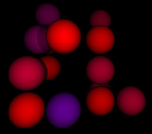

Conway's Game of Life in 3D perspective
 John Conway's Game of Life is a simple simulation of the birth, reproduction, and death of a population of cells. The original formulation uses a rectangular grid, and the rules for cell propagation are very simple: each cell in the grid lives or dies simply on the basis of how many neighbouring cells there are. The simulation exhibits different behaviour -- sometimes radically different -- with quite subtle changes in the game rules.
The rules originally formulated by Conway are:
A live cell with fewer than two, or more than three, neighbours dies.
A new cell is spawned in any empty position with three neighbours.
All other cells are unchanged
The Game of Life has been studied very thoroughly by mathematicians, and a whole jargon has grown up around it. For example, some groups of cells hold their pattern while propagating across the grid -- such groups are called "gliders". There are many other well-known repeating and mobile patterns.
It occurred to me to wonder whether the Game of Life could be run, not a planar grid, but in a three-dimensional space. If the space is divided into cubes, then each cell could have up to 26 neighbours, rather than the eight of a planar grid. Presumably, then, the same game rules that work for the two-dimensional case would not be appropriate for three dimensions, but it wasn't clear how different they would have to be.
I decided to write a simple program, life3d
to test whether the
three-dimensional case could be implemented, and whether it
would show the same pattern-forming and stability behaviour
we see in two dimensions. I wanted the program to generate an
reasonably aesthetic, perspective display, with somewhat realistic
shading and shadows -- not just for eye candy, but to make it easier
to visualize the layout of the cells.
However, I didn't want to write thousands
of lines of ray-tracing code myself, or use specialized graphics
hardware.
Implementation
I wrote the program in C++, making use of Don Cross's ray-tracing library. This library is written in C++, so it's a little easier to write the rest of the program in C++ as well, rather than C, which I usually prefer.
The library outputs to PNG files, but it wasn't particularly difficult to modify it to write to the Linux framebuffer instead. For more information on using the Linux framebuffer from a C program, see my just the essentials article.
Each cell is represented as a sphere in the ray-tracing library's scene model. The spheres are placed on a cubic grid, according to whether or not a live cell is at that grid position. To understand the model better, and for added visual interest, I've coloured the spheres so they shade from red to blue as they age.
The ray-tracing library allows point light sources to be placed in arbitrary positions. The selection of lights does not affect the simulation, of course, but it significantly affects the display. I think that placing the lights so as to have the cells cast shadows on the cells behind creates a sense of depth, that makes it easier to visualize the layout of the cells. But that, I guess, is a matter of taste.
Full source code is available in my GitHub repository.
Behaviour
The screenshot below shows a single frame captured from the program. This was from a run with a 6x6x6 grid. Note that there is a distribution of cell ages.
I expected that, as the cells in the 3D model have (essentially) three times more neighbours than in the 2D case, new game rules could be formulated by multiplying the original Conway neighbour counts by three. That is, the rules would be:
A live cell with fewer than six, or more than nine, neighbours dies.
A new cell is spawned in any empty position with nine neighbours.
All other cells are unchanged
In fact, with these rules, most starting positions led to a rapid depopulation. It seems that the rule for spawning a new cell needs to take a range of values, not just a single value. I've hard reasonable results with spawning a new cell when there are four or five neighbours, but other combinations are possible.
As in the original, 2D formulation, most game rules lead either to a depopulation, a static overpopulation, or a pattern that alternates between two states. It's not clear to me whether there is an algorithm for choosing model parameters -- other than trial-and-error -- that allow the cell distribution to develop over time whilst keeping approximately the same population size.
As yet, I haven't been able to reproduce the moving pattern behaviour ('gliders') of the 2D version. However, it's possible that I'd need a larger grid to see this behaviour.
Further work
The kinds of computer I have access to can run life3d
in real time with grids of up to about 8x8x8. Larger grids are not
only too slow to simulate, but it's hard to visualize what's going
on the deeper layers of the model. So, while it would be
practicable to improve speed with larger grids
by using less visually pleasing
rendering, I'm not sure it would make the behaviour much easier to
study. Perhaps what's needed is a way to rotate the viewpoint, and
perhaps to zoom in and out, in real time. Such work, however, takes
us further into the domain of video game programming than I really
have the skills for.